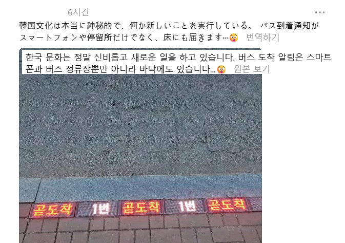
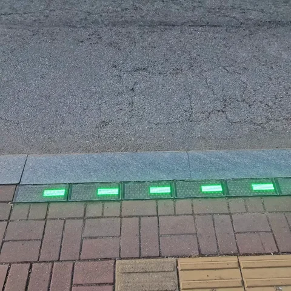
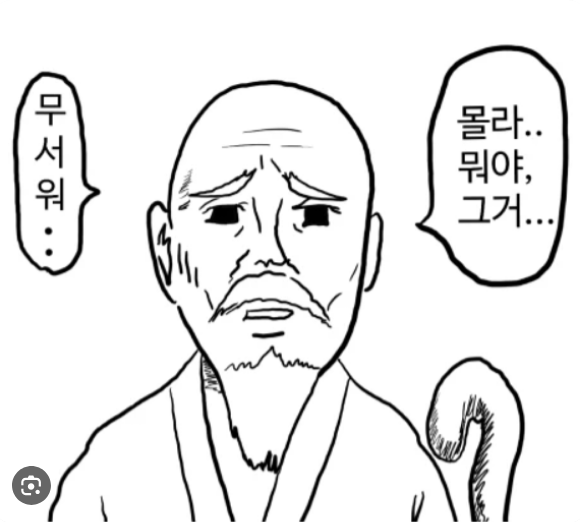

https://cafe.daum.net/subdued20club/ReHf/5787589?svc=cafeapi



https://cafe.daum.net/subdued20club/ReHf/5787589?svc=cafeapi




송파구 뭐하냐 당장 깔아라
폰에 미친 좀비라도 너 때문에 승차지연은 허하지 않겠다
씨이벌펑크 소울 ㄷㄷ
정류장부터 미래 감성 물씬임
본적이없는데 굳이 세금들여 저렇게까지 해야하나 싶다, 도시미관이나 신경쓰지
폰 보느라 고개숙이고 있는 경우 ㅈㄴ 많아서 있으면 다들 은근 편해함.
어느정도 도시미관이 갖춰진곳이 저런걸 하지 보통은..
아마도 아님.. 미안.
빨간눈뽕에서 초록눈뽕으로 변하면 건너면 됨
얼마나 좋아
악명높은 천안 버스기사들을 아무리 계도조치해도 변화가 없으니 시민들을 위한 정책이 이어지는거 라고 보면됨
그리고 천안시청 삼성전자 사업장 덕분에 돈 많음
저런 형식의 설비는 세금낭비라고 생각 안하는데?
응?? 어디에있는거지?
뭐야 플라스틱 광역버스 번호가 어느새 저리된겨
서울은 저런곳이구나...
천안이래
숏폼 중독자들 너무 많아서
뭐야 이거 어딨는거야 ㅋㅋ
애초에 연석 앞에서 안 기다릴 텐데 저게 쓸모가 있음?
천안은 연석 앞에서서 손흔들어야 버스가 멈춰줌
원래있던 라이팅블록에 표시하는건가 개쩌네
중국보면 놀라서 기절하겠네
중국 싫지만, 선전시에서 보여지는 것만봐도
ai활용 특이점 또는 쓰나미는 반도를 덮칠거라 예상중.
https://www.bzeronews.com/news/articleView.html?idxno=676497
2년전 천안에서 한건가보네. 저 동네 사는사람 없음? 아직 유지되고 있는지 확대된건지 궁금하네
천안중앙시장에도 박혀있는거 봄 비슷한걸로는 횡단보도 신호등도 인도 테두리에 저렇게 해놓음
유동인구 많은곳부터 차츰차츰 늘리고 있는 중인듯
저게 왜 필요함?
폰만보는 양반들 편하게 보기가능
아! ㄱㅅ
천안은 일어서서 손 흔드는게 아니면 버스가 정거장을 무시하고 지나가버림
폰 보고있다 버스 놓치는 경우가 워낙 많아서 생김
나도 놀라운데?
저건모르겠도 버정장 엉뜨있는건 촌동네도 많이있긴라드라
좋은거 같은데
중앙 버정에서 버스 뒤쪽에 멈추면 맨날 탈까말까 버스아조시랑 밀당하는데
이런 led로 정차위치 정해주거나 몇번 탈거면 어디로 가라고 표시해주거나 해주면 좋을거같다
나도 그생각 함 ㅋㅋ 두대 이상의 버스가 왔을때 몇번몇번 가고 몇번몇번 기다리세요 하는 그런 ㅋㅋ
횡단보도 바닥에 빨간불 초록불도 처음 나왔을땐 신호등 보는게 그렇게 어렵냐고 말 많았는데 막상 나오니까 ㅈㄴ편했던거 생각하면 저것도 꽤 좋을지도 ㅋㅋ
뭐야이거시바
근데 저런거보다 빨리 시각장애인들이 불편함없이 버스 탈수있게 만드는게 더 문제같던데
개랑 동반해서 타야하고 몇번왔는지 소리로 알려주는것도 아직 많이 부족하고
우리가 이 정도면 중공은...
엉뜨의자만한게 없어
걍 시발 우선정차를 좀 해 ㅅㅂ 서울버스는 아무도 없는 정류장이라도 일단 멈췄다 가드만 이시발럼들이 어필안한다고 그냥 갈길가고 지랄
요즘 우리동내 보도블럭 차단봉에도 빛들어 오더라
서울=나이트시티
우리동네도 좀 만들어줘라
이쪽도 버스 꼬라지 천안이랑 비슷한데 ㅋㅋㅋ
제일 놀라는건 버스 정류장 엉뜨의자
바닥은 나도 처음보는데
사이버펑크 코리아
저게 뭐여...